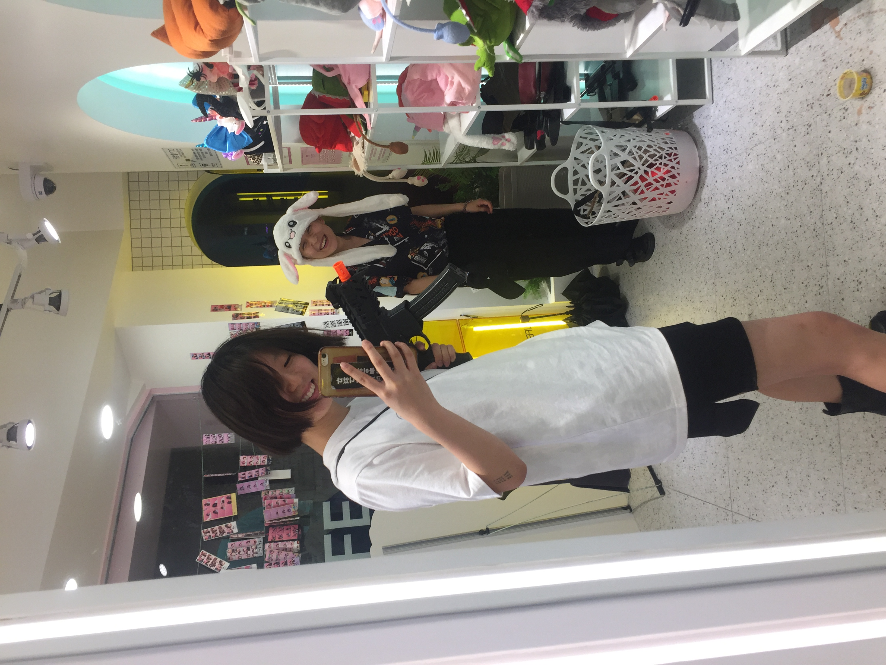
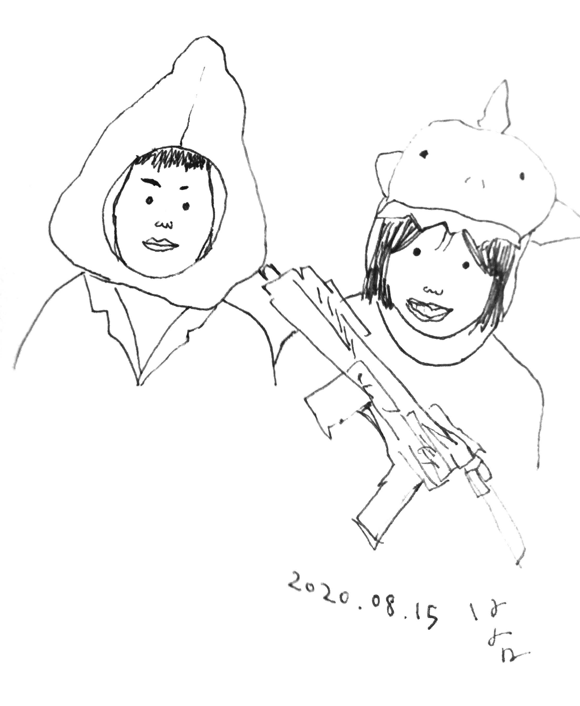
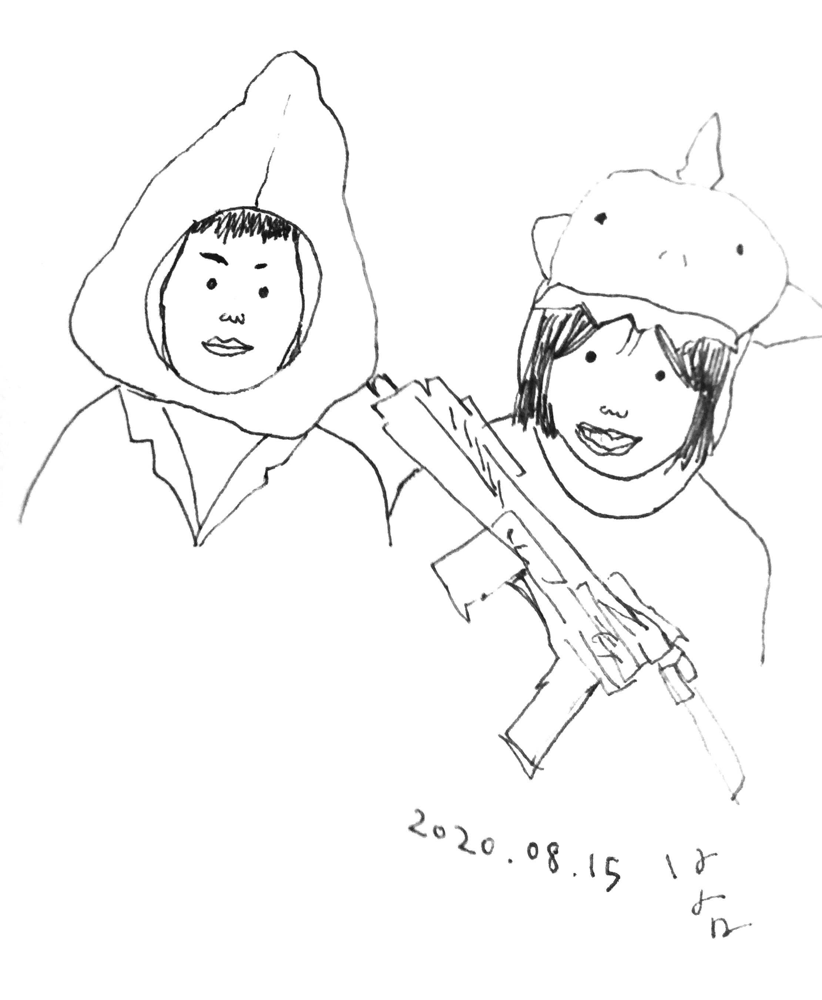
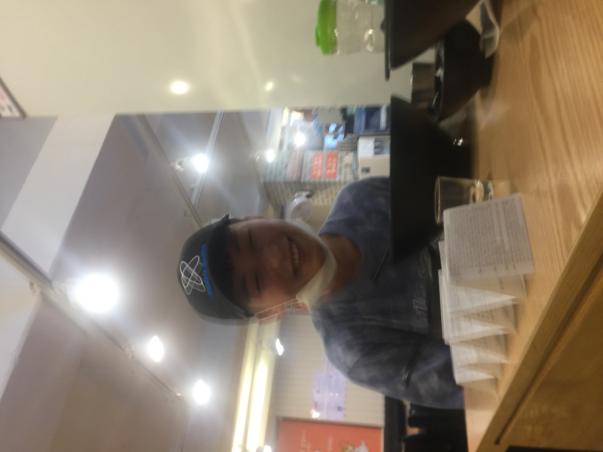
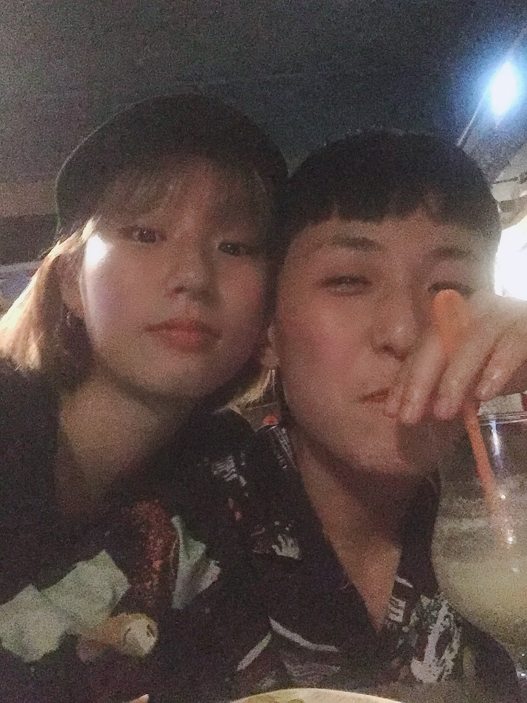
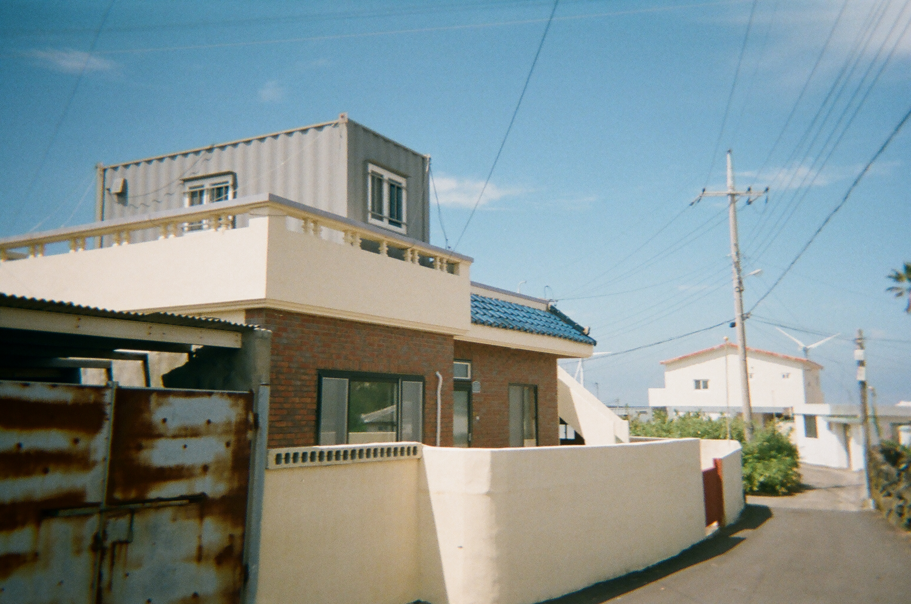
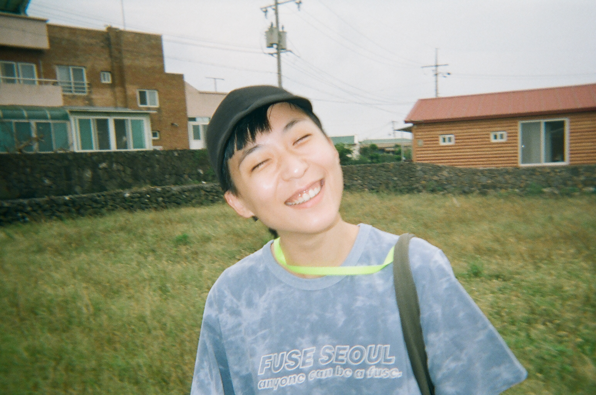
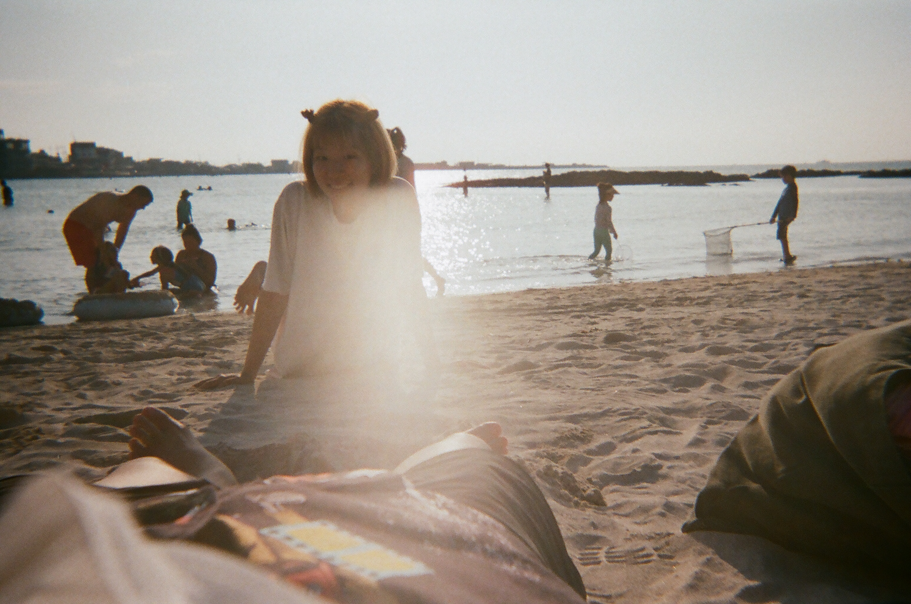
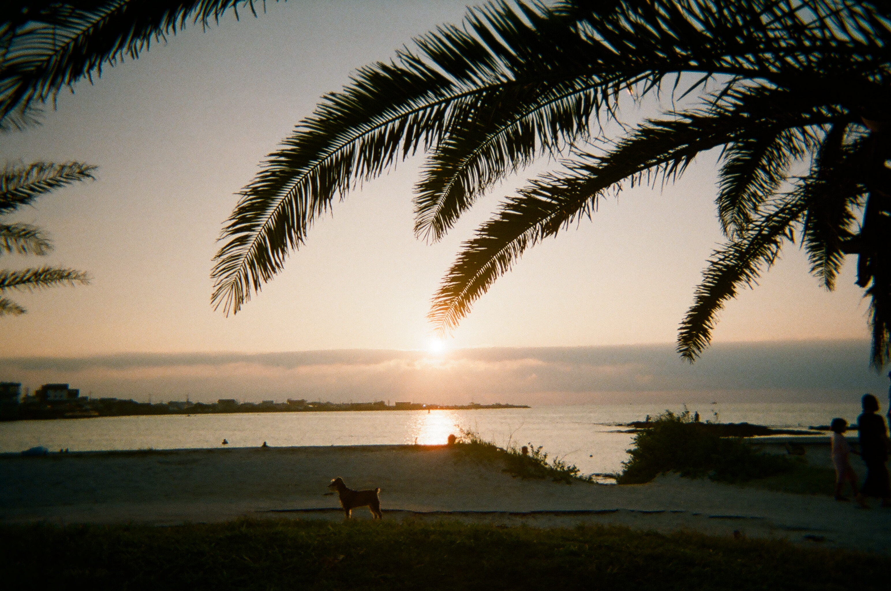

August
♦8월 14일 금요일♦
처음 만난 날!👭
이날을 천천히 기억해보면 정말 신기한 하루였던 것 같아. 히히히 아직도 생각하면 설레>.< 수현이가 제일 좋아하는 사진~💗 
만나기로 했던 날을 까먹고 친구들이랑 약속을 잡았다.^.^ 약속을 하루 뒤로 미뤘다. 더 미루면 못 만날 것 같아서 무리하게 그 주에 잡았다. 일하느라 지친 몸을 이끌고 굳이 합정까지 걸어가서 옷을 하나 샀다. 그 옷을 입고 틴더 사람을 만날 생각이었다. 살짝 긴장이 되었다. 이 사람에 대해서 하나도 모르니 무슨 말을 해야 할지 모르겠고 갑자기 그냥 가고 싶어졌다. 그전날부터 무슨 옷 입을지 애들한테 물어보고 긴장하고 낯가리느라 아마도 표정이 경직되어 있었던 모양이다. 혹시나 하는 마음으로 ^.^ 섹스어필을 위해서 일부러 일스로 적당히 꾸미고 갔다.
내가 항상 가던 코스로 안내했다. 채식사람들이 모이는 손오공 마라탕에서 위장을 조지고 퀴어사람들이 모이는 색다른한잔에서 열심히 대화를 했다. 우리의 대화나 분위기가 달라진 건 장소를 옮기면서 시작된 것 같다. 일정 달력에 쓴대로 ‘수현님 데이트’가 되어가고 있었다.
처음 만난 날, 나는 그 애에게 무장해제가 되었다. 별 얘기를 다 했고 편안해졌다. 그리고 나는 이상한 짓들을 했다. 이상한 모습들을 보여줬다. 도대체, 왜? 플러팅을 하고 싶었는데 일이 이상하게 흘러갔다. 그 애는 정확히 알 수는 없지만, 좋아하는듯 보였다. 내 계획대로 우리는 막차를 놓쳤고 색다른한잔의 영업시간이 끝나서 비 오는 홍대를 정처없이 돌아다녔다.
일단 가게 앞에 비를 피하려고 그냥 앉아버렸다. 진짜 이상한 기분이었다. 코로나로 인해 홍대는 사람이 거의 없었고 우리는 처음 만난 날 길바닥에 누웠다. 정확히는 내가 그 애랑 붙어 있고 싶어서 나 혼자 그 애 다리에 머리를 베고 누웠다. 평소 지나가던 길을 처음 보는 길처럼 보고 있었다. 갑자기 그 애랑 함께 처음 하는 일들이 많다는 걸 문득 깨달았다. 얘 뭐지?
색다른한잔에서는 바에 앉아서 서로 앞을 볼 때가 많았다. 나는 그 애가 앞을 볼 때 열심히 옆모습을 훔쳐봤다. 얼굴을 관찰하면서 점 두 개를 발견했다. 너무 귀여워서 만지고 싶어 미치는 줄 알았다. 어느 후카 술집에서는 마주 앉았고 나는 그 애의 눈을 열심히 관찰했다. 그때까지 눈이 그렇게 쳐져 있는 줄은 몰랐다. 계속 웃고 있어서.
비가 멈추지 않아서 우리는 우산을 샀다. 일회용 좁은 우산을 쓰고 첫차 때까지 기다릴 곳을 찾아 헤맸다. 나는 오늘을 남기고 싶었고 마침 인생사진 찍는 곳이 24시간이고 해서 같이 찍으러 갔다. 외국에서 온 그 애는 현금을 들고 다녀서 다행히도 찍을 수 있었다.
집에 와서 나는 자기 전에 사진을 보면서 그날의 일들을 곱씹어보았다. 행복했고 표정에서 다 드러났다. 어떤 거대한 파도가 한꺼번에 나한테 온듯이 그 애한테 빠져버렸다.
 
♦8월 20일 목요일♦

♦8월 20일 목요일♦두번째 마라탕!

♦8월 26일 수요일♦
더 빠

♦8월 30일 일요일♦
수현이가 파주 온 날
그 전날 우리집에서 자고~ 처음 섹스했지모

September
♥8월 20일 목요일♥
제주도~🌈
   


October
November